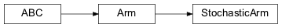
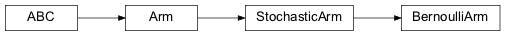
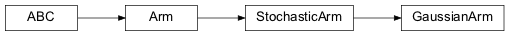

banditpylib.arms¶
Classes¶
Arm: ArmPseudoArm: Pseudo armStochasticArm: Stochastic armBernoulliArm: Bernoulli armGaussianArm: Gaussian arm
- class banditpylib.arms.Arm(name: Optional[str])[source]¶
- Parameters
name (Optional[str]) – alias name
Inheritance
- property name: str¶
Arm name
- class banditpylib.arms.PseudoArm(name: Optional[str] = None)[source]¶
Pseudo arm
This class is used to store empirical information of an arm.
- Parameters
name (Optional[str]) – alias name
Inheritance
- property em_mean: float¶
Empirical mean of rewards
- property em_std: float¶
Empirical standard variance of rewards
- property em_var: float¶
Empirical variance of rewards
- property total_pulls: int¶
Total number of pulls
- property total_rewards: float¶
Total rewards obtained so far
- class banditpylib.arms.StochasticArm(name: Optional[str])[source]¶
Stochastic arm
- Parameters
name (Optional[str]) – alias name
Inheritance
- abstract property mean: float¶
Mean of rewards
- class banditpylib.arms.BernoulliArm(mu: float, name: Optional[str] = None)[source]¶
Bernoulli arm
Arm with rewards generated from a Bernoulli distribution.
- Parameters
mu (float) – mean of rewards
name (Optional[str]) – alias name
Inheritance
- property mean: float¶
Mean of rewards
- class banditpylib.arms.GaussianArm(mu: float, std: float, name: Optional[str] = None)[source]¶
Gaussian arm
Arm with rewards generated from a Gaussian distribution.
- Parameters
mu (float) – mean of rewards
std (float) – standard deviation of rewards
name (Optional[str]) – alias name
Inheritance
- property mean: float¶
Mean of rewards
- pull(pulls: Optional[int] = None) → Union[float, numpy.ndarray][source]¶
Pull the arm
When pulls is None, a float number will be returned. Otherwise, a numpy array will be returned.
- Parameters
pulls – number of times to pull
- Returns
stochastic rewards
- property std: float¶
Standard deviation of rewards